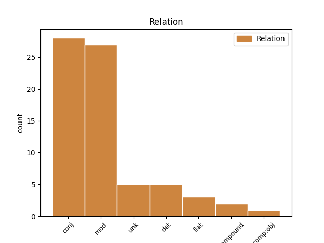
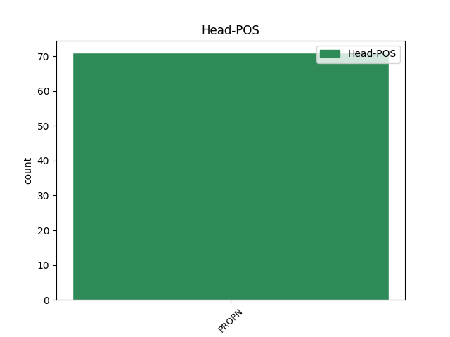
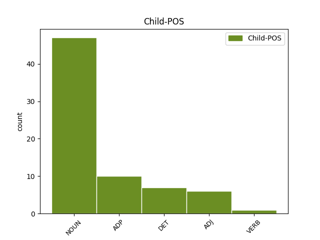

Distribution of features within this leaf



Agreement Rules sorted by frequency.
- When the dependent token is the modifer(mod) of the head token, and the head token is PROPN and the dependent token is NOUN.
1 Gipuzkoan _ _ _ _ 0 _ _ _
2 %99 _ _ _ _ 0 _ _ _
3 , _ _ _ _ 0 _ _ _
4 Bizkaian _ _ _ _ 0 _ _ _
5 %90 _ _ _ _ 0 _ _ _
6 , _ _ _ _ 0 _ _ _
7 Araban Araba PROPN _ Case=Ine|Definite=Def|Number=Sing 0 _ _ _
8 %60koa %60 NOUN _ Case=Abs|Definite=Def|Number=Sing 7 mod _ _
9 eta _ _ _ _ 0 _ _ _
10 Nafarroan _ _ _ _ 0 _ _ _
11 %100ekoa _ _ _ _ 0 _ _ _
12 izan _ _ _ _ 0 _ _ _
13 da _ _ _ _ 0 _ _ _
14 grebaren _ _ _ _ 0 _ _ _
15 jarraipena _ _ _ _ 0 _ _ _
16 . _ _ _ _ 0 _ _ _
1 Gainera _ _ _ _ 0 _ _ _
2 , _ _ _ _ 0 _ _ _
3 bederatzi _ _ _ _ 0 _ _ _
4 kontrol _ _ _ _ 0 _ _ _
5 jarri _ _ _ _ 0 _ _ _
6 zituzten _ _ _ _ 0 _ _ _
7 Diliren Dili PROPN _ Case=Gen|Definite=Def|Number=Sing 0 _ _ _
8 eta _ _ _ _ 0 _ _ _
9 Attabeiren _ _ _ _ 0 _ _ _
10 artean arte ADP _ Case=Ine|Definite=Def|Number=Sing 7 conj _ SpaceAfter=No
11 . _ _ _ _ 0 _ _ _
1 Ikus-entzunezkoen _ _ _ _ 0 _ _ _
2 alorra _ _ _ _ 0 _ _ _
3 etorkizunari _ _ _ _ 0 _ _ _
4 hain _ _ _ _ 0 _ _ _
5 hertsiki _ _ _ _ 0 _ _ _
6 lotuta _ _ _ _ 0 _ _ _
7 dagoen _ _ _ _ 0 _ _ _
8 garai _ _ _ _ 0 _ _ _
9 hauetan _ _ _ _ 0 _ _ _
10 , _ _ _ _ 0 _ _ _
11 oso _ _ _ _ 0 _ _ _
12 garrantzitsutzat _ _ _ _ 0 _ _ _
13 jo _ _ _ _ 0 _ _ _
14 dute _ _ _ _ 0 _ _ _
15 hitzarmena _ _ _ _ 0 _ _ _
16 EITBk _ _ _ _ 0 _ _ _
17 , _ _ _ _ 0 _ _ _
18 Ibaiak Ibaia PROPN _ Case=Erg|Definite=Def|Number=Sing 0 _ _ _
19 eta _ _ _ _ 0 _ _ _
20 Eusko _ _ _ _ 0 _ _ _
21 Jaurlaritzako _ _ _ _ 0 _ _ _
22 Kultura _ _ _ _ 0 _ _ _
23 Sailak sail NOUN _ Case=Erg|Definite=Def|Number=Sing 18 conj _ SpaceAfter=No
24 . _ _ _ _ 0 _ _ _
1 Mika _ _ _ _ 0 _ _ _
2 Hakkinen Hakkinen PROPN _ Case=Abs|Definite=Def|Number=Sing 0 _ _ _
3 finlandiarra finlandiar ADJ _ Case=Abs|Definite=Def|Number=Sing 2 mod _ _
4 ( _ _ _ _ 0 _ _ _
5 McLaren _ _ _ _ 0 _ _ _
6 ) _ _ _ _ 0 _ _ _
7 izan _ _ _ _ 0 _ _ _
8 zen _ _ _ _ 0 _ _ _
9 azkarrena _ _ _ _ 0 _ _ _
10 , _ _ _ _ 0 _ _ _
11 Mi-chael _ _ _ _ 0 _ _ _
12 Schumacherren _ _ _ _ 0 _ _ _
13 ( _ _ _ _ 0 _ _ _
14 Ferrari _ _ _ _ 0 _ _ _
15 ) _ _ _ _ 0 _ _ _
16 eta _ _ _ _ 0 _ _ _
17 David _ _ _ _ 0 _ _ _
18 Coultharden _ _ _ _ 0 _ _ _
19 ( _ _ _ _ 0 _ _ _
20 McLaren _ _ _ _ 0 _ _ _
21 ) _ _ _ _ 0 _ _ _
22 aurretik _ _ _ _ 0 _ _ _
23 . _ _ _ _ 0 _ _ _
1 Harry _ _ _ _ 0 _ _ _
2 bedeinkatua _ _ _ _ 0 _ _ _
3 lana _ _ _ _ 0 _ _ _
4 , _ _ _ _ 0 _ _ _
5 berriz _ _ _ _ 0 _ _ _
6 , _ _ _ _ 0 _ _ _
7 eleberria _ _ _ _ 0 _ _ _
8 oinarri _ _ _ _ 0 _ _ _
9 hartu _ _ _ _ 0 _ _ _
10 eta _ _ _ _ 0 _ _ _
11 Careyk Carey PROPN _ Case=Erg|Definite=Def|Number=Sing 0 _ _ _
12 berak bera DET _ Case=Erg|Definite=Def|Number=Sing 11 det _ _
13 gidoia _ _ _ _ 0 _ _ _
14 moldatuta _ _ _ _ 0 _ _ _
15 , _ _ _ _ 0 _ _ _
16 Ray _ _ _ _ 0 _ _ _
17 Lawrenceren _ _ _ _ 0 _ _ _
18 zuzendaritzapean _ _ _ _ 0 _ _ _
19 zinemara _ _ _ _ 0 _ _ _
20 eraman _ _ _ _ 0 _ _ _
21 zen _ _ _ _ 0 _ _ _
22 . _ _ _ _ 0 _ _ _
1 Soraluzeko Soraluze PROPN _ Case=Loc|Definite=Def|Number=Sing 0 _ _ _
2 Udalean udal NOUN _ Case=Ine|Definite=Def|Number=Sing 1 unk _ _
3 EAJk _ _ _ _ 0 _ _ _
4 bost _ _ _ _ 0 _ _ _
5 zinegotzi _ _ _ _ 0 _ _ _
6 ditu _ _ _ _ 0 _ _ _
7 , _ _ _ _ 0 _ _ _
8 EHk _ _ _ _ 0 _ _ _
9 hiru _ _ _ _ 0 _ _ _
10 eta _ _ _ _ 0 _ _ _
11 EAk _ _ _ _ 0 _ _ _
12 , _ _ _ _ 0 _ _ _
13 PSE-EEk _ _ _ _ 0 _ _ _
14 eta _ _ _ _ 0 _ _ _
15 PPk _ _ _ _ 0 _ _ _
16 bana _ _ _ _ 0 _ _ _
17 , _ _ _ _ 0 _ _ _
18 eta _ _ _ _ 0 _ _ _
19 orain _ _ _ _ 0 _ _ _
20 arte _ _ _ _ 0 _ _ _
21 gobernu _ _ _ _ 0 _ _ _
22 batzordea _ _ _ _ 0 _ _ _
23 EAJk _ _ _ _ 0 _ _ _
24 , _ _ _ _ 0 _ _ _
25 EAk _ _ _ _ 0 _ _ _
26 eta _ _ _ _ 0 _ _ _
27 EHk _ _ _ _ 0 _ _ _
28 osatzen _ _ _ _ 0 _ _ _
29 zuten _ _ _ _ 0 _ _ _
30 . _ _ _ _ 0 _ _ _
1 Aita aita NOUN _ Case=Abs|Definite=Def|Number=Sing 2 comp:obj _ _
2 Urrestillakoa Urrestilla PROPN _ Case=Abs|Definite=Def|Number=Sing 0 _ _ _
3 dut _ _ _ _ 0 _ _ _
4 . _ _ _ _ 0 _ _ _
1 Baloia baloi NOUN _ Case=Abs|Definite=Def|Number=Sing 2 compound _ _
2 Cruyffi Cruyff PROPN _ Case=Dat|Definite=Def|Number=Sing 0 _ _ _
3 iritsi _ _ _ _ 0 _ _ _
4 zitzaion _ _ _ _ 0 _ _ _
5 , _ _ _ _ 0 _ _ _
6 honek _ _ _ _ 0 _ _ _
7 Javi _ _ _ _ 0 _ _ _
8 Morenoren _ _ _ _ 0 _ _ _
9 hanketan _ _ _ _ 0 _ _ _
10 jarri _ _ _ _ 0 _ _ _
11 zuen _ _ _ _ 0 _ _ _
12 eta _ _ _ _ 0 _ _ _
13 valentziarrak _ _ _ _ 0 _ _ _
14 azkenik _ _ _ _ 0 _ _ _
15 , _ _ _ _ 0 _ _ _
16 sareetara _ _ _ _ 0 _ _ _
17 bidali _ _ _ _ 0 _ _ _
18 zuen _ _ _ _ 0 _ _ _
19 baloia _ _ _ _ 0 _ _ _
20 Pradaren _ _ _ _ 0 _ _ _
21 irteera _ _ _ _ 0 _ _ _
22 gaindituz _ _ _ _ 0 _ _ _
23 . _ _ _ _ 0 _ _ _
1 Suduperen _ _ _ _ 0 _ _ _
2 jarrera _ _ _ _ 0 _ _ _
3 irekiagoa _ _ _ _ 0 _ _ _
4 izan _ _ _ _ 0 _ _ _
5 balitz _ _ _ _ 0 _ _ _
6 egungo _ _ _ _ 0 _ _ _
7 egoera _ _ _ _ 0 _ _ _
8 ezberdina _ _ _ _ 0 _ _ _
9 izan _ _ _ _ 0 _ _ _
10 zitekeela _ _ _ _ 0 _ _ _
11 adierazi _ _ _ _ 0 _ _ _
12 zuen _ _ _ _ 0 _ _ _
13 , _ _ _ _ 0 _ _ _
14 eta _ _ _ _ 0 _ _ _
15 egungo _ _ _ _ 0 _ _ _
16 egoeraren _ _ _ _ 0 _ _ _
17 erantzuleetako _ _ _ _ 0 _ _ _
18 bat _ _ _ _ 0 _ _ _
19 Sudupe Sudupe PROPN _ Case=Abs|Definite=Def|Number=Sing 0 _ _ _
20 bera bera DET _ Case=Abs|Definite=Def|Number=Sing 19 mod _ _
21 dela _ _ _ _ 0 _ _ _
22 erantsi _ _ _ _ 0 _ _ _
23 zuen _ _ _ _ 0 _ _ _
24 . _ _ _ _ 0 _ _ _
1 Hainbat _ _ _ _ 0 _ _ _
2 eleberriren _ _ _ _ 0 _ _ _
3 egilea _ _ _ _ 0 _ _ _
4 da _ _ _ _ 0 _ _ _
5 - _ _ _ _ 0 _ _ _
6 dozenatik _ _ _ _ 0 _ _ _
7 gora _ _ _ _ 0 _ _ _
8 - _ _ _ _ 0 _ _ _
9 eta _ _ _ _ 0 _ _ _
10 horien _ _ _ _ 0 _ _ _
11 artean _ _ _ _ 0 _ _ _
12 Itsas _ _ _ _ 0 _ _ _
13 barneko _ _ _ _ 0 _ _ _
14 emakumea _ _ _ _ 0 _ _ _
15 , _ _ _ _ 0 _ _ _
16 Odol _ _ _ _ 0 _ _ _
17 gorria _ _ _ _ 0 _ _ _
18 eta _ _ _ _ 0 _ _ _
19 aipatua _ _ _ _ 0 _ _ _
20 dugun _ _ _ _ 0 _ _ _
21 Schindlerren Schindler PROPN _ Case=Gen|Definite=Def|Number=Sing 0 _ _ _
22 untzia ontzi NOUN _ Case=Abs|Definite=Def|Number=Sing 21 flat _ _
23 dira _ _ _ _ 0 _ _ _
24 . _ _ _ _ 0 _ _ _
Disagree Examples:
1 EEBBek EEBB PROPN _ Case=Erg|Definite=Def|Number=Plur 0 _ _ _
2 eta _ _ _ _ 0 _ _ _
3 Europako _ _ _ _ 0 _ _ _
4 Batasunak batasun NOUN _ Case=Erg|Definite=Def|Number=Sing 1 conj _ _
5 bake _ _ _ _ 0 _ _ _
6 elkarrizketetara _ _ _ _ 0 _ _ _
7 itzultzeko _ _ _ _ 0 _ _ _
8 eskatu _ _ _ _ 0 _ _ _
9 diete _ _ _ _ 0 _ _ _
10 Barak _ _ _ _ 0 _ _ _
11 zein _ _ _ _ 0 _ _ _
12 Arafati _ _ _ _ 0 _ _ _
13 . _ _ _ _ 0 _ _ _
1 2002. _ _ _ _ 0 _ _ _
2 urteko _ _ _ _ 0 _ _ _
3 presidentzialen _ _ _ _ 0 _ _ _
4 ikuspegitik _ _ _ _ 0 _ _ _
5 , _ _ _ _ 0 _ _ _
6 Jospinek _ _ _ _ 0 _ _ _
7 Chevenementen Chevenement PROPN _ Case=Gen|Definite=Def|Number=Sing 0 _ _ _
8 eta _ _ _ _ 0 _ _ _
9 haren _ _ _ _ 0 _ _ _
10 jarraitzaileen jarraitzaile NOUN _ Case=Gen|Definite=Def|Number=Plur 7 conj _ _
11 sostengua _ _ _ _ 0 _ _ _
12 bermatu _ _ _ _ 0 _ _ _
13 nahi _ _ _ _ 0 _ _ _
14 izango _ _ _ _ 0 _ _ _
15 du _ _ _ _ 0 _ _ _
16 , _ _ _ _ 0 _ _ _
17 beharbada _ _ _ _ 0 _ _ _
18 . _ _ _ _ 0 _ _ _
1 Berdin _ _ _ _ 0 _ _ _
2 zait _ _ _ _ 0 _ _ _
3 lagunek _ _ _ _ 0 _ _ _
4 , _ _ _ _ 0 _ _ _
5 Gorkak Gorka PROPN _ Case=Erg|Definite=Def|Number=Sing 0 _ _ _
6 eta _ _ _ _ 0 _ _ _
7 eskolakoek eskola NOUN _ Animacy=Inan|Case=Erg|Definite=Def|Number=Plur 5 conj _ _
8 zer _ _ _ _ 0 _ _ _
9 dioten _ _ _ _ 0 _ _ _
10 . _ _ _ _ 0 _ _ _
1 Rositak Rosita PROPN _ Case=Erg|Definite=Def|Number=Sing 0 _ _ _
2 eta _ _ _ _ 0 _ _ _
3 senideek senide NOUN _ Case=Erg|Definite=Def|Number=Plur 1 conj _ _
4 " _ _ _ _ 0 _ _ _
5 mendiko _ _ _ _ 0 _ _ _
6 tipulak _ _ _ _ 0 _ _ _
7 " _ _ _ _ 0 _ _ _
8 ateratzen _ _ _ _ 0 _ _ _
9 dituzte _ _ _ _ 0 _ _ _
10 jateko _ _ _ _ 0 _ _ _
11 . _ _ _ _ 0 _ _ _
1 Garciak Garcia PROPN _ Case=Erg|Definite=Def|Number=Sing 0 _ _ _
2 eta _ _ _ _ 0 _ _ _
3 berarekin _ _ _ _ 0 _ _ _
4 atxilotutakoek atxilotu VERB _ Case=Erg|Definite=Def|Number=Plur|VerbForm=Part 1 conj _ _
5 ukatu _ _ _ _ 0 _ _ _
6 egin _ _ _ _ 0 _ _ _
7 zuten _ _ _ _ 0 _ _ _
8 kale _ _ _ _ 0 _ _ _
9 istiluetan _ _ _ _ 0 _ _ _
10 aritu _ _ _ _ 0 _ _ _
11 zirenik _ _ _ _ 0 _ _ _
12 . _ _ _ _ 0 _ _ _